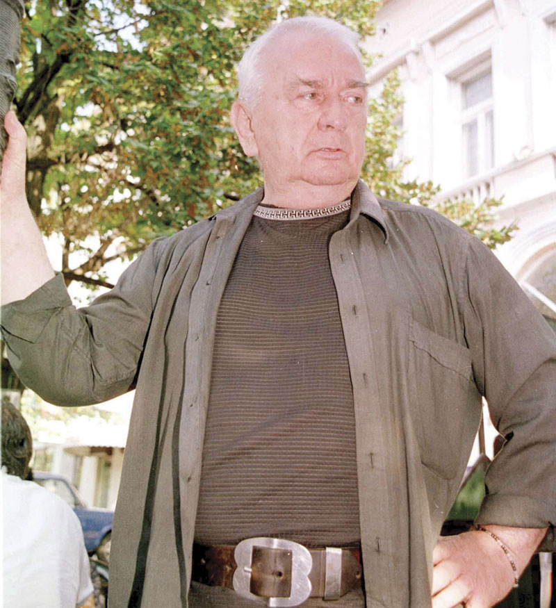

|
Grešio sam mnogo, i sad mi je žao
i sto nisam više, i što nisam ludje
jer, samo će gresi, kada budem pao
biti samo moji- sve je drugo tudje.
Grešio sam mnogo, učio da stradam
leteo sam iznad vaše mere stroge.
Grešio sam, jesam, i još ću, bar se nadam
svojim divnim grehom da usrećim mnoge.
Grešio sam, priznajem, nisam bio cveće
grešio i za vas, koji niste smeli,
pa sad deo moga greha niko neće,
a ne bih ga dao-ni kad biste hteli.
Duško Trifunović

|
O, kad bi znao ti kako je meni
što neću vise smeti
ni u proleće, kad trava zeleni,
ni kada cveta leti,
doći ti sutonom, dok tuga raste.
O, kad bi znao ti kako je duši
kad zadnje drveće mre
i zadnje lišće žalosno pevuši,
što neće moći kao pre
reći ti svoje jesenje plašnje.
O, kad bi znao ti sta srce skriva
kad oko zalud traži.
O, kad bi znao ti kako jednolik biva,
bez boje i bez draži,
svaki dan kada te videla nisam!
Desanka Maksimovic
|